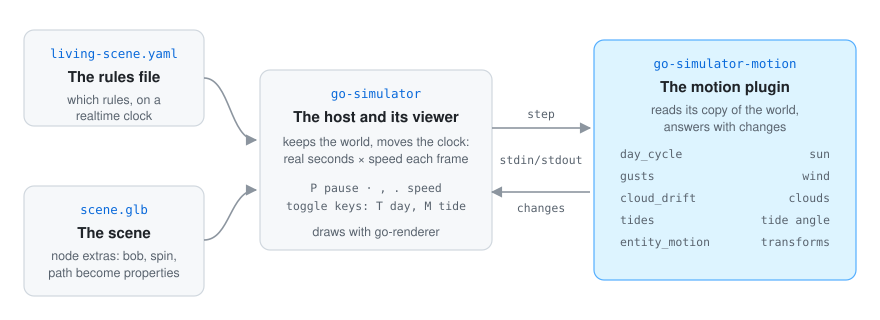
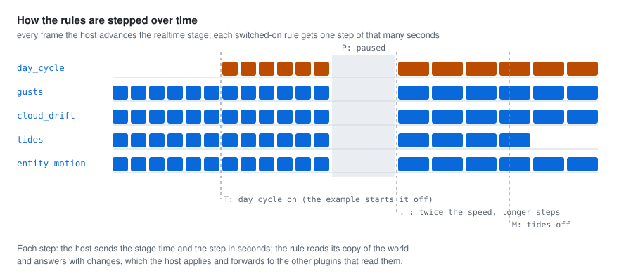

go-simulator is the host. It loads the scene, keeps the world (its entities and its environment) and moves the clock. The motion plugin is a separate program the host starts; they talk over standard input and output (go-simulator’s protocol).
environment: the sun direction, the
wind, the clouds’ offset and the tide angle.entity_motion reads only the entities with a bob, spin or path property and writes
transforms.A plugin never touches the renderer: it reads its copy of the world and answers with changes (go-simulator’s writing plugins). The renderer then draws the sky, the sway of plants, the clouds and the water from the environment, and the entities where their transforms put them. Shapes are in world units and fields in physical units, as go-simulator’s vocabulary lists.

The example’s rules are on a realtime clock. Every frame the viewer advances that stage by the
seconds that passed, times the speed:
P) sends no steps; the motions stop where they are., .) makes the steps shorter or longer, so everything moves slower or faster
together.T.The rules work in rates, not frames: the sun turns 2π × step / seconds_per_day, the tide
2π × step / period, a path moves speed × step. So a slow and a fast computer show the same
scene after the same time. gusts and entity_motion keep their own count of the seconds they
have been stepped, so a rule switched off and on again picks up where it stopped.
The pictures in these pages that show motion (the bay at the top of the README, the strips, the sky
and the clouds, and the three entity panels) were drawn from the plugin’s own answers. A small
throwaway program, kept outside the repository, ran the real plugin in a go-simulator host with
examples/living-scene.yaml, switched the day cycle on with T as the viewer would, put a made-up
bay in the world (a ferry on a looping path, a skiff on one that goes out and back, two buoys that
bob, a mill that spins), advanced the clock 0.1 seconds at a time for two minutes, and drew where
everything was.
They are SVG drawings with their own light and dark colours, not screenshots of the viewer: the repository has no example scene whose entities ask for a motion, and the look of the sky and the water is the renderer’s work, not this plugin’s. The diagrams (how it fits, the two kinds of motion, the steps over time) were drawn by hand in the same style.